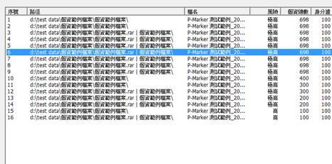
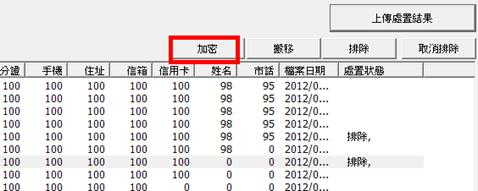
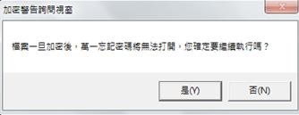
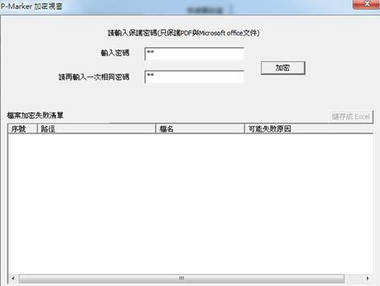
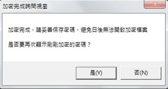
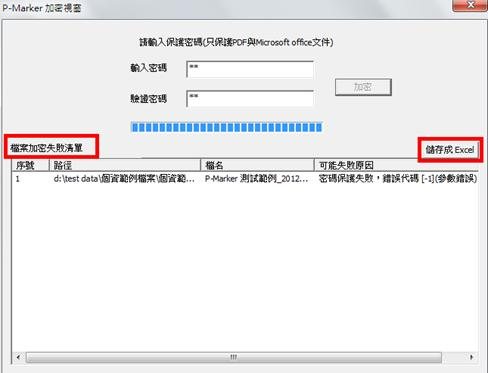
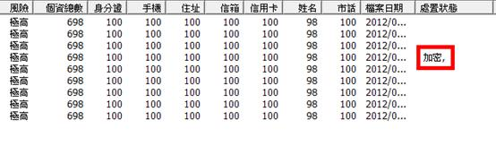

使用者可以利用應用程式內建的加密功能進行檔案加密，系統支援的檔案格式如下：
- Microsoft Office Word支援格式：doc、docx
- Microsoft Office Excel支援格式：xls、xlsx
- Microsoft Office PowerPoint 支援格式：ppt、pptx
- Adobe PDF。
註1：作業環境需安裝 .NET Framework 3.5 SP 1 才能使用加密功能。
註2：受限於Microsoft 和 Adobe本身的加密規格限制，無法保證所有檔案都能成功加密，但加密失敗的檔案會放在加密失敗清單中，提供使用者觀看。
註3：電腦安裝Microsoft Office 2003的情況下，透過 Reader 加密.docx、xlsx、pptx 等 Microsoft Office 2007 之檔案格式會造成檔案本身毀損。
使用者要進行檔案加密的步驟如下：
(1) 選取要加密的檔案。

(2) 點選畫面右上方的「加密」按鈕。

(3) 系統會跳出警告視窗，提醒使用者將檔案加密後，忘記密碼就無法再開啟檔案，請按「是」進入下一步驟。

(4) 輸入密碼並確認密碼後(請輸入相同的密碼)，按下「加密」按鈕。

(5) 加密完成後，系統會詢問使用者是否要再次觀看密碼，按下「是」系統會顯示使用者剛剛使用的密碼。

(6) 加密過程中若有加密失敗的情況，系統會將失敗的檔案列入「檔案失敗清單中」（失敗原因請參考章節＜何謂檔案加密失敗清單？ ＞），使用者可以將失敗的清單透過「儲存成Excel」按鈕匯出成Excel 檔案。

(7) 加密完成後，系統會在處置狀態欄位標註該檔案已被「加密」。
